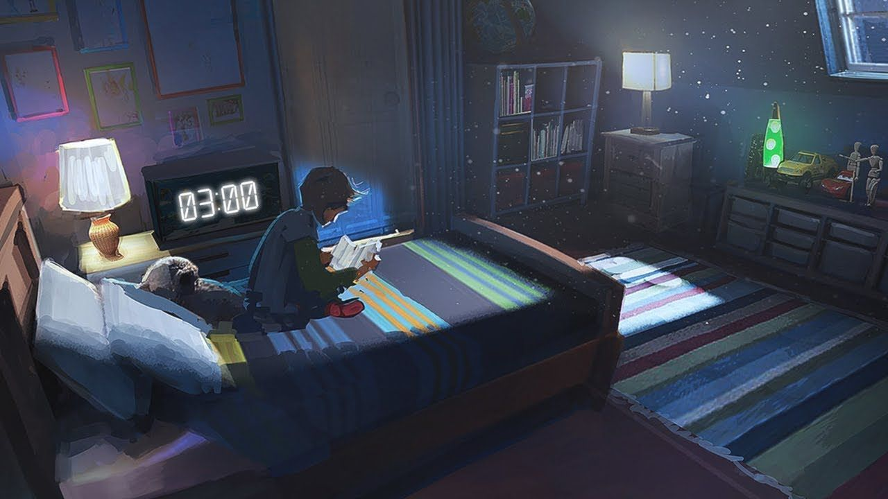

What is lofi/chill music?
If you need beats to relax to – this is the perfect genre for you.
If you listen to music, you must have definitely come across this playlist titled "lofi hip-hop/chill - beats to relax to".
It is a sub-genre of hip-hop. Lo-Fi combines jazz, house, and hip-hop beats to create a calm and easy listening aura you can play while studying, relaxing, or sleeping too. You can usually hear raw instruments or notes in the songs, as well as small samples of dialog or settings.
The name Lo-Fi comes from the term "low-Fidelity" which in this case if reference to the sounds of vinyl crackle and sample distortion which is used in a number of ways, namely the provocation of nostalgia, and to distance the sample or melody from any other song with a similar sound.
Lo-Fi is primarily composed of a beat (similar to that of a hip-hop beat but with less bass) and looped samples (commonly used samples include piano melodies and/or vocals ) most songs are relaxing and evoke positive emotions, often time nostalgia.
Research has suggested that certain types of music help focus, and Lo-Fi is the perfect genre for this.